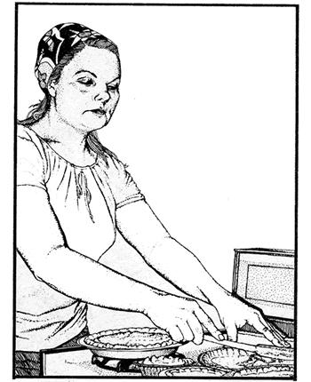
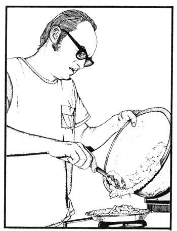
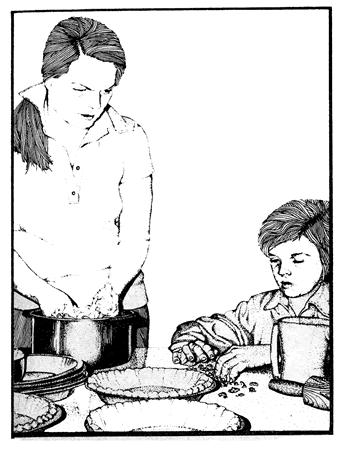

How To Start A Home Bakery Of Your Own
If you are a good baker and have the right kitchen set up, you might be able to start a home-based baking business.
By Jack McQuarrie
January/February 1976
Fed up with time clocks, the rat race, and being a small cog in what increasingly seems to be an overwhelmingly large wheel? "Then," says Jack McQuarrie, "do what we did. Learn to live on less and to supply what money you still need with little home businesses of your own. We now pick up most of the manufactured items we want from the local dump, we've earned nearly $100 a month during the summer picking the berries that grow wild on vacant city lots, and we've started our own home bakery."
That recipe you've been hoarding. You know the old family favorite for-lo!-these many generations. It may be just the ticket you need to take you from the wage slavery you now hate to the economic independence you covet.
I know. Because that's exactly what my wife, Marie, and I have used to do the same thing for us. And now, based on our experience, I feel sure that with a little imagination and some ingenuity you too should be able to convert your grandmother's best-kept secret into a means of survival on your own, terms!
START WHEREVER YOU ARE
We founded our little home bakery right here where we were already living in Berkeley, California. On the one hand, we'll admit that this college town-with more than its fair share of coffee shops that cater to young people with time on their hands and slight pangs in their stomachs-was a better than average community in which to launch our enterprise. On the other hand, however, it's just as fair to point out that Berkeley is also a town with more than its fair share of students trying to pick up a few bucks by doing their "own thing".
If the opportunities are good here, then, the competition is also rather stiff. Whether or not that balances out in our favor, I can't really say. I can only attribute the success we've had to perseverance, a little luck, and our magic ingredient: a recipe held close to the family bosom for many years. Today our specialty, walnut pie, and its junior partner, banana nut bread, keep us happily busy supplying both products to coffee shop munchers.
HOW IT ALL BEGAN
The idea for our home-based bakery came to us one afternoon in 1972 while Marie and I sat morosely picking at pieces of leftover dessert (a derivative of an old Southern recipe for pecan pie that Marie, for economic reasons, had based on walnuts instead). Our last unemployment check lay on the table in front of us and we had yet to discover a way to keep any money coming in once that check was spent.
"Maybe you should have taken that job with Singer's," Marie said sadly. "They'll just get someone else to run the computer if you don't."
"You're right," I agreed. "But, damn it, there has to be a way to make a living without introducing more misery into the world." Listlessly, I poked another chunk of pie into my mouth: "It's too bad we can't sell your pies, babe .
" I paused, the fork dangling in the air in front of my nose. "What's the matter?" Marie asked.
"That's it. Your pies!"
"I don't get it."
"Your pies, for Pete's sake.
We'll sell your pies!"
Marie was unimpressed. "You're out of your head," she finally decided and went back to a casual reading of the newspaper.
Within a few days, however, we found that my scheme was far from crazy.
The manager of the first restaurant we approached with the idea was delighted not only with our proposition, but with the samples we let him taste. He was so pleased, in fact, that-after agreeing to give our walnut pies a trial run-he asked us to bring in a proven favorite: banana nut bread. His previous supplier of that specialty, it seemed, was leaving the area.
Similar receptions awaited us at the next three restaurants we visited. All were eager for something a little bit different.
And then we hit a snag, when one coffee shop proprietor asked if we had a health permit and business license. "Gulp," we said. "No, we don't. But we'll look into it."
CATCH 22 ARID HOW WE BEAT IT
Our visit to city hall's licensing bureau was quite discouraging. For one thing, we were informed that we resided in an area which was zoned strictly non-commercial. For another, the cost of a health inspection and license would have run about $70.00 more than we could risk on a still-to-get-offthe-ground business.
Only slightly daunted, we dejectedly explained our plight to two lower echelon types at the bureau who-very cooly, we thoughtsuggested that our best course of action would be just to go ahead with our bakery plans without the inspection and license. "Give it a try under the table," they said, "and see what happens. If you're lucky enough to have a winner and if anyone then challenges you about it, plead ignorance:"
So we went back to the cautious restauranteur and leveled with him told him that we were going to do exactly as we had been unofficially advised down at city hall. And-surprise!-he not only said he'd go along with the idea but volunteered some help of his own: "If anyone asks, I'll tell them you do the baking here. You can even use my kitchen one day a week, if you'd like."
As it turned out, our new friend was the only one of the 20 proprietors we visited who queried us on this red tape score. So, unless your experiences are very different from our own, I doubt if you need to get too concerned about the problem. Besides, it's been our experience that determination and ingenuity will carry you over any obstacles The System may put in your path toward creating an alternative to the established (straitjacketed) way of doing things. If you want "out" badly enough, you'll find a means of building the road you need to take you there.
YOUR REAL PROBLEM: COST
Sooner or later, should you try our caper, you'll find that your home bakery will live or die depending on how you control the cost of its operation. Keep your expenses down-without compromising the quality of your product, of course-and you'll make enough money to stay in business and earn a profit. Don't and you won't. A penny saved really can be a penny earned and time spent studying ways to hang onto those pennies can return worthwhile dividends.
We save money, for example, by purchasing supplies such as flour, raisins, and nuts in bulk at the Farmers' Market in San Francisco. We've been able to get nuts-our most expensive ingredient-from this source for as little as one-half the going supermarket price. It's also common for us to save 25% on the flour we buy at the Market.
Eggs, we've found, can be obtained most inexpensively when purchased "by the flat" from roadside produce stands or dairies. If you're too far from these sources, however (as we often are here in the city), you can keep your eyes on the shopping flyers for specials. A saving of four or five cents per dozen adds up when you're dealing with a large volume, as we now are.
One large and recurring expense that we still haven't whittled down to our satisfaction is the-we feel-wasteful amount of money we spend on piepans. Although our well-intentioned restaurant managers usually promise-with the most soulful sincerity-to return the pans each week they, like most people locked into The System, are usually too hurried to spend much time taking care of matters which do not directly benefit them or their employers. So we wind up buying a great number of piepans. After much haggling, we've managed to get the plates for $1.20 a dozen from a supplier over in Oakland and, unfortunately, we have to visit him far more than we'd prefer.
And remember: all those "little" errands you run for your business do add up. Car mileage is a definite cost factor with a home-operated bakery, just as it is with any enterprise. It's especially easy to pile up a surprising number of miles each delivery day so try to keep your clients as close together and as close to your home base as possible.
KEEP IT SIMPLE
One of the beauties of a home bakery is that you don't need a heck of a lot of equipment to get you started. Just a stove, a few pans, some ingredients and that "special" recipe. If you want to get a little fancier, you'll find a timer (to keep you from over or under cooking an oven full of goodies on those busy days when you're preoccupied with more than you can remember) well worth its small investment. As is an oven thermometer if, like us, you have a temperamental stove.
Whatever you feel you need to launch your enterprise, don't forget to check the thrift stores first when you go shopping. We've had great luck finding everything we've wanted secondhand. We even bought an old Mixmaster for just $4.95!
THINK CLEAN, THINK QUALITY
When you operate a family-sized home business, you quickly realize that there's no one to pass the buck to when you goof something up. You-or your family-alone are responsible for any slipshod work and, if you expect your enterprise to grow and thrive, you're well advised to set high standards for yourself and to constantly make every effort you can to exceed them.
For example: If you, as we do, shell the nuts which go into your baked goods make double danged sure that you do the job with utmost care. People are finicky-and rightfully so-about the food they eat and, especially in today's hard times, they want value for their money. Even one small chip of a shell, passed over and left in with the nut meats in one of your pies or loaves of bread, could be enough to turn off your best customer.
Another example: Don't be too cheap to invest a few cents in giving your products a quality image. Plastic bags and even cake boxes can be purchased from paper wholesalers for just a penny or two apiece. The cost, in short, is hardly anything at all compared to the atmosphere of care and the "guarantee" of cleanliness that such packaging adds to your goods.
HOW TO PRICE YOUR PRODUCTS
If your baked goods are really above average, don't underestimate them. We've found (to our pleasant surprise), that the individual or family with something tasty to offer has no trouble commanding a fair price for his, her, or their products. There's so much prepackaged and machine-made food on the market these days that genuinely mouthwatering goods are welcomed with open arms. If what you have to sell is really in demand, don't be afraid to ask a premium price for it.
The amount we charge for our pies and nut loaves varies from time to time, depending on the actual cost of the ingredients we use. As a rule of thumb, though, we follow a pricing schedule that leaves us with $1.00 after all expenses for each pie and a net of 80 cents over and above expenses on every loaf of nut bread.
This clears us $20.00 or more on most days and still leaves plenty of room for our buyers to make a fair profit when they resell our products to their customers.
WE WORK FOR MORE THAN MONEY
No, we're not getting rich in the bakery business. But then, we didn't set out to become rich. We're quite content as long as our little home enterprise guarantees our day-to-day survival, keeps us relatively independent of The System, and leaves us free to pursue other interests.
We also feel that our business "pays" us with more than money. Shelling all the nuts we use, for instance, is the most timeconsuming part of our operation and, in many ways, the most satisfying. All three McQuarries-Marie, me, and our ten-year-old son, Wesley-thoroughly enjoy sitting around the living room fireplace in the evening cracking and picking nuts, sharing the day's experiences, and listening to KPFA (our area's "alternative" radio station). It gives us an idea of what family life must once have been like: closely knit, with each member having the satisfaction of actively contributing to the general welfare.
Nope. We probably won't stay in the family baking business forever. But, yep! Now that our walnut pie has shown us the way to . economic liberation, we intend to always earn our daily breadwhile we draw our family closer together-with a do-it-ourselves enterprise that we completely own and control.
 |
 |
 |
|
 |
|
|